리눅스마스터-2급 (2015-09-12 기출문제)
1과목: 리눅스 운영 및 관리
1. 파일의 허가권은 다음과 같다. 사용자는 읽기, 쓰기, 실행 권한을 부여하고 그룹과 다른 사용자는 읽기및 실행 권한만 설정하려고 할 때 알맞은 것은?(오류 신고가 접수된 문제입니다. 반드시 정답과 해설을 확인하시기 바랍니다.)
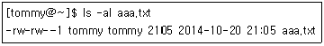
- chmod u+rwx, go+rw aaa.txt
- chmod u+rwx,g+rx,o+rx aaa.txt
- chmod 755 aaa.txt
- chmod 577 aaa.txt
(정답률: 77%)

2. 다음 중 tommy 사용자에게 설정된 쿼터를 rogan 사용자에게도 적용하기 위한 방법으로 알맞은 것은?
- edquota -p tommy rogan
- edquota -p rogan tommy
- edquota -c tommy rogan
- edquota -c rogan tommy
(정답률: 64%)
3. 다음 중 umask 명령에 대한 설명이 틀린 것은?
- 새로 생성되는 파일에 대한 권한을 제한하기 위한 명령어이다.
- umask 000 으로 설정하면 파일 생성시 777(rwxrwxrwx), 디렉터리는 666 (rw-rw-rw)가 된다.
- umask 002로 설정할 경우 umask -S 실행시 u=rwx,g=rwx,o=rx로 표시된다.
- 일반 사용자도 umask값 설정이 가능하다.
(정답률: 65%)
4. 다음 중 파일이나 디렉터리의 소유그룹 권한을 변경하는 명령어로 알맞은 것은?
- chgrp
- chmod
- groupmod
- usermod
(정답률: 76%)
5. 다음 중 ( 괄호 ) 안에 들어갈 내용으로 알맞은 것은?
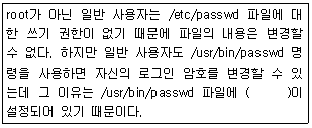
- umask
- SetUID
- Sticky Bit
- Parity Bit
(정답률: 68%)
6. 다음 중 생성 되는 파일 시스템의 종류가 다른 것은?
- mke2fs -j /dev/sdb1
- mkfs.ext3 /dev/sdb1
- mkfs /dev/sdb1
- mke2fs -t ext3 /dev/sdb1
(정답률: 75%)
7. 다음 중 fsck 명령어에 대한 설명으로 틀린 것은 ?
- 리눅스 파일 시스템을 검사하고 수리하는 명령어이다.
- 손상된 파일을 수정할 때 사용자가 생성한 디렉터리에서 작업을 수행한다.
- -a 옵션은 수행에 대한 질문 없이 무조건 점검을 진행한다.
- e2fsck 명령어는 fsck 명령어 수행 시 실제 동작하는 명령어이다.
(정답률: 50%)
8. 다음중 리눅스파일시스템에 대한 설명으로 틀린 것은?
- Superblock은 파일 시스템의 크기와 같은 전체적인 파일 시스템에 대한 정보를 갖는다.
- inode는 파일 종류, 소유권 등의 정보를 가지고 있다.
- iso9660은 표준 CD-ROM 파일 시스템이다.
- nfs는 MS-DOS 파일 시스템의 FAT과 호환을 위해 사용한다.
(정답률: 64%)
9. 다음 중 파일이나 디렉터리의 크기를 확인할 때 사용하는 명령어는?
- du
- free
- fsck
- df
(정답률: 70%)
10. /etc/fstab 필드 중에서 fsck와 가장 연관이 있는 필드는 몇 번째 인가?
- 3번째
- 4번째
- 5번째
- 6번째
(정답률: 58%)
11. 다음 ( 괄호 ) 안에 들어갈 설명으로 알맞은 것은?
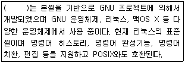
- C 셸
- bash 셸
- tcsh 셸
- ksh 셸
(정답률: 85%)
12. 다음 중 셸에 대한 설명으로 틀린 것은?
- 셸은 사용자의 지시를 수신한다.
- 셸은 커널과 통신한다.
- 셸은 키보드를 통한 사용자의 요청을 따른 명령어를 해석한다.
- 셸은 CPU를 직접 제어한다.
(정답률: 85%)
13. 다음 설명에 해당 파일로 알맞은 것은?
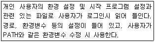
- /etc/profile
- /etc/bashrc
- ~/.bash_profile
- /etc/profile.d
(정답률: 63%)
14. 다음 중 명령행 편집 기능을 제공하는 확장 C셸로 알맞은 것은?
- bash
- csh
- tcsh
- sh
(정답률: 63%)
15. 다음 중 기존의 PATH 설정 값에 /home/tommy 경로를 추가하려고 할 때 알맞은 것은?
- export PATH=$PATH:/home/tommy
- export PATH=PATH:/home/tommy
- export $PATH=$PATH:/home/tommy
- export $PATH=PATH:/home/tommy
(정답률: 77%)
16. 다음 중 히스토리 (History) 개수를 400으로 지정 하려고 할 때 알맞은 것은?
- export HISTCTL=400
- export HISTORY=400
- export HISTSIZE=400
- export HISCONTROL=400
(정답률: 81%)
17. alias cp='cp -i' 가 등록되어 있다. 다음 중 alias를 해제하기 위한 방법으로 가장 알맞은 것은?
- alias cp=''
- unalias cp
- alias cp=‘cp -d'
- unalias cp=‘cp – I’
(정답률: 76%)
18. 다음 중 echo $SHELL >> a.txt 명령을 실행했을 때 관련 설명으로 알맞은 것은 ?
- a.txt 파일에 $SHELL 이라는 내용이 저장된다.
- 터미널에 현재 사용하는 셸의 경로(Path)와 a.txt 파일의 내용이 출력된다.
- 현재 사용하는 로그인 셸의 경로(Path)가 a.txt 파일에 추가된다.
- 터미널에 $SHELL 문자열과 a.txt 파일이 내용이 출력된다.
(정답률: 66%)
19. 다음 중 프로세스에 관한 설명으로 틀린 것은?
- 최초의 프로세스인 init은 PID가 0이다.
- 리눅스 부팅 시에 발생하는 데몬 프로세스들은 fork방식이다.
- 하나의 프로세스가 다른 프로세스를 실행하기 위한 방법에는 fork와 exec가 있다.
- inet방식은 프로세스가 메모리에 항상 상주하는 것이 아니라, 클라이언트의 요청이 있을 때 메모리에 상주한다.
(정답률: 72%)
20. 다음 중 리눅스 시스템에서 inetd 기반으로 운영하는 서비스로 가장 알맞은 것은?
- httpd
- ssh
- telnet
- samba
(정답률: 44%)
21. 다음 ( 괄호 ) 안에 들어갈 내용으로 알맞은 것은?
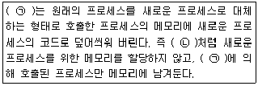
- (ㄱ) exec (ㄴ) fork
- (ㄱ) fork (ㄴ) exec
- (ㄱ) inet (ㄴ) standalone
- (ㄱ) standalone (ㄴ) inet
(정답률: 71%)
22. 다음 중 포어그라운드(foreground) 프로세스를 백그라운드(background) 프로세스로 전환할 때 사용하는 인터럽트 키 조합으로 알맞은 것은?
- [Ctrl]+[\]
- [Ctrl]+[c]
- [Ctrl]+[z]
- [Ctrl]+[d]
(정답률: 76%)
23. 다음 중 SIGTERM(또는 TERM)의 시그널 번호로 알맞은 것은?
- 1
- 9
- 15
- 19
(정답률: 69%)
24. 다음 중 kill 명령어의 사용법으로 틀린 것은?
- kill %2
- kill 1222
- kill 9 756 757 758
- kill –i9 httpd
(정답률: 61%)
25. 작업 중인 터미널창이 종료 되더라도 실행 중인 프로세스를 백그라운드 프로세스로 계속 작업할 수 있도록 하려고 한다. 다음 ( 괄호 ) 안에 들어갈 내용으로 알맞은 것은?
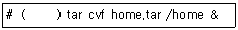
- bg
- fg
- nohup
- nice
(정답률: 73%)
26. 다음 조건으로 crontab에 등록할 때 알맞은 것은?
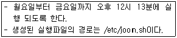
- 12 13 * * 1-5 /etc/joon.sh
- 13 12 * * 1-5 /etc/joon.sh
- 12 13 1-5 * * /etc/joon.sh
- 13 12 1-5 * * /etc/joon.sh
(정답률: 79%)
27. 다음 명령의 결과에 대한 설명으로 틀린 것은?
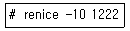
- 1222는 PID를 나타낸다.
- 우선순위를 높인 것이다.
- 일반사용자는 위의 명령을 실행할 수 없다.
- 기존의 값에서 -10이 된 NI값으로 설정된다.
(정답률: 52%)
28. 다음 결과와 관련 있는 ps 옵션으로 알맞은 것은?
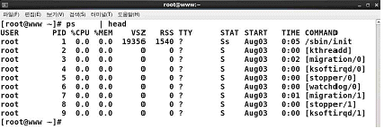
- ef
- -a
- aux
- -f
(정답률: 60%)
29. 다음 중 emacs 최초 개발자로 알맞은 것은?
- 리누스 토발즈
- 리처드 스톨만
- 제임스 고블링
- 브람 무레나르
(정답률: 79%)
30. 다음 중 텔넷 접속 시나 텍스트 기반 콘솔 창에서 사용할 수 없는 편집기로 알맞은 것은?
- pico
- nano
- emacs
- gedit
(정답률: 68%)
31. 다음 그림에서 설명하는 편집기로 알맞은 것은?
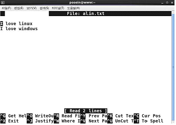
- vi
- nano
- emacs
- gedit
(정답률: 63%)
32. vi 편집모드에서 [Enter]키를 입력하여 다음 행으로 이동했을 때 위 줄과 같은 열에 커서를 위치 시키려고 한다. 다음 중 vi 편집기에서 지정하는 환경 설정으로 알맞은 것은?
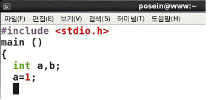
- :set all
- :set ai
- :set sm
- :set ic
(정답률: 69%)
33. vi 명령모드에서 편집 중인 텍스트 파일의 가장 마지막 줄로 이동할 때 알맞은 것은?
- :e
- :#
- :$
- :!
(정답률: 59%)
34. 다음 중 vi 편집기에서 문자열 검색을 위해 사용하는 명령으로 관련이 없는 것은?
- s
- n
- /
- ?
(정답률: 46%)
35. 다음 소스 설치 단계와 관련 있는 프로그램으로 알맞은 것은?
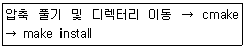
- 아파치 웹 서버
- PHP
- MySQL
- SAMBA
(정답률: 59%)
36. 다음 중 데비안 리눅스의 패키지 관리 기법과 가장 관련이 없는 것은?
- alien
- dpkg
- dselect
- yast
(정답률: 59%)
37. 다음 ( 괄호 )안에 들어갈 내용으로 알맞은 것은?
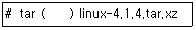
- zxvf
- Zxvf
- jxvf
- Jxvf
(정답률: 48%)
38. 다음중 압축률이가장높은 프로그램으로알맞은것은?
- xz
- gzip
- bzip2
- compress
(정답률: 59%)
39. 다음 중 apt-get 명령이 패키지 관련 정보를 확인하기 위해 참조하는 파일로 알맞은 것은?
- /etc/sources.list
- /etc/apt/sources.list
- /var/cache/apt/archive
- /var/cache/archive
(정답률: 71%)
40. 다음 중 yum을 이용하여 totem이라는 패키지를 제거하는 명령으로 알맞은 것은?(오류 신고가 접수된 문제입니다. 반드시 정답과 해설을 확인하시기 바랍니다.)
- yum delete totem
- yum erase totem
- yum eliminate totem
- yum remove totem
(정답률: 74%)
41. 다음 중 설치하려는 rpm 파일에 대한 정보를 보려고 할 때 ( 괄호 ) 안에 들어갈 내용으로 알맞은 것은?(오류 신고가 접수된 문제입니다. 반드시 정답과 해설을 확인하시기 바랍니다.)
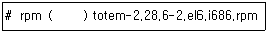
- -qip
- -qfp
- -qap
- -qcp
(정답률: 61%)
42. 다음 ( 괄호 ) 안에 들어갈 내용으로 알맞은 것은?
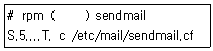
- -v
- -V
- -ql
- -qc
(정답률: 54%)
43. 다음 중 윈도우 NT 시스템과 프린터를 공유할 때 리눅스에서 설정 가능한 유형으로 알맞은 것은?
- Local
- Unix Printer
- Samba Printer
- JetDirect
(정답률: 76%)
44. 다음 중 리눅스의 장치 관련 설명으로 틀린 것은?
- /dev/sda3는 첫 번째 SCSI 디스크 3번째 파티션을 의미한다.
- /dev/fd는 스캐너 장치를 사용할 때 이용된다.
- /dev/lp0를 사용하여 텍스트 파일 문서 출력이 가능하다
- 리눅스는 원격 프린터를 지원한다.
(정답률: 60%)
45. 다음 중 프린터 작업을 요청하여 인쇄를 할 때 사용 가능한 명령어 조합으로 알맞은 것은 ?
- lp, lpstat
- lpr, lpc
- lpc, lpstat
- lpr, lp
(정답률: 57%)
46. 다음 중 aaa.txt 라는 문서를 lp 라는 이름을 가진 프린터로 2장 출력하는 명령으로 알맞은 것은?
- lpr -# 2 -P lp aaa.txt
- lpr -m 2 -P lp aaa.txt
- lpr -r 2 -P lp aaa.txt
- lpr 2 -P lp aaa.txt
(정답률: 71%)
47. 다음 중 리눅스에서 사운드 카드를 설정하는 방법으로 틀린 것은?
- ALSA 설치
- 커널 컴파일
- OSS 설치
- CUPS 설치
(정답률: 61%)
48. 다음 중 스캐너와 관련 장치 파일을 찾아주는 명령어로 알맞은 것은?
- sane-find-scanner
- scanimage
- scanadf
- xcam
(정답률: 80%)
2과목: 리눅스 활용
49. 다음 중 데스크톱 환경의 종류로 틀린 것은?
- MWM
- LXDE
- KDE
- Xfce
(정답률: 54%)
50. 다음은 두 번째 윈도 터미널에 X-window를 실행하는 과정이다. ( 괄호 ) 안에 들어갈 내용으로 알맞은 것은?
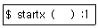
- -
- --
- -depth
- -dpi
(정답률: 58%)
51. 다음 중 Xlib의 역할을 대체하기 위해 등장한 클라이언트 라이브러리로 알맞은 것은?
- Xt
- XCB
- GTK+
- Qt
(정답률: 67%)
52. 다음의 설명으로 알맞은 것은?
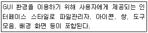
- 윈도 매니저
- 데스크톱 환경
- 유저 인터페이스
- 디스플레이 매니저
(정답률: 47%)
53. 다음 중 PDF 문서를 읽기 위해 사용하는 프로그램으로 알맞은 것은?
- evince
- evolution
- eog
- display
(정답률: 67%)
54. 다음 중 KDE에서 사용하는 웹 브라우저 및 파일 관리 프로그램으로 알맞은 것은?
- konqueror
- nautilus
- gimp
- eog
(정답률: 55%)
55. 다음 ( 괄호 ) 안에 들어갈 내용으로 알맞은 것은?
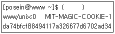
- xhost list DISPLAY
- xhost list $DISPLAY
- xauth list DISPLAY
- xauth list $DISPLAY
(정답률: 55%)
56. 다음 중 X 서버에 접근하는 192.168.12.22번 IP주소의 X 클라이언트를 허가하려고 할 때 알맞은 것은?
- xhost 192.168.12.22
- xhost + 192.168.12.22
- xhost –192.168.12.22
- xhost add 192.168.12.22
(정답률: 63%)
57. 이더넷 카드가 장착된 두 개의 시스템을 UTP 케이블을 이용해서 직접 연결하려고 한다. 다음 중 UTP 케이블의 배열에 대한 설명으로 알맞은 것은?
- 양쪽 모두 배열의 순서만 같으면 된다.
- 양쪽 모두 T568A로 배열한다.
- 양쪽 모두 T568B로 배열한다.
- 한쪽은 T568A로 배열하고 다른쪽은 T568B로 배열한다.
(정답률: 67%)
58. LAN 구성 방식 중 관리하는 중앙 컴퓨터 고장에 가장 큰 문제점을 유발하는 방식으로 알맞은 것은?
- 링형
- 망형
- 버스형
- 스타형
(정답률: 69%)
59. 다음 중 DQDB(Distributed Queue Dual Bus)와 관련 있는 구성 방식으로 알맞은 것은?
- LAN
- MAN
- WAN
- Wi-Fi
(정답률: 50%)
60. 다음에서 설명하는 내용과 관련 있는 방식으로 알맞은 것은?
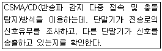
- ATM
- Ethernet
- FDDI
- Token Ring
(정답률: 53%)
61. 다음 중 패킷 교환 방식에 대한 설명으로 틀린 것은?
- 전송 대역폭이 동적이다.
- 이론상 호스트의 무제한 수용이 가능하다.
- 패킷마다 오버헤드 비트는 존재하지 않는다.
- 모든 데이터가 같은 경로로 전송되지 않을 수도 있다.
(정답률: 61%)
62. 다음 중 TCP 및 UDP 프로토콜의 특징 비교에 대한 설명으로 틀린 것은?
- TCP는 연결지향 전송 프로토콜이다.
- UDP는 ACK 패킷을 주고받으면서 전송 여부를 확인한다.
- TCP가 UDP에 비해 안정성과 신뢰성이 뛰어나다.
- UDP가 TCP에 비해 전송 속도는 빠르다.
(정답률: 66%)
63. 다음 중 일반 사용자에게 배분되어 사용되는 공인 IP 주소로 알맞은 것은?
- 172.31.12.22
- 223.254.203.5
- 224.12.5.8
- 192.168.5.3
(정답률: 39%)
64. SSH 서버에 접속할 때 별도의 인증 파일을 통해 접근할 수 있다. 다음 중 SSH 서버에 생성하는 인증 파일로 알맞은 것은?
- id_rsa
- id_rsa.pub
- auth_keys
- authorized_keys
(정답률: 54%)
65. 다음 중 삼바(Samba)와 가장 관련 있는 프로토콜로 알맞은 것은?
- RPC
- CIFS
- SCP
- UDP
(정답률: 63%)
66. 다음 중 인터넷 서비스 관련 포트 번호를 확인 할 때 사용하는 파일로 알맞은 것은?
- /etc/protocols
- /etc/services
- /etc/ports
- /etc/port_numbers
(정답률: 62%)
67. 다음 중 FTP 서버 접속된 상태에서 파일을 삭제할 때 사용하는 명령으로 알맞은 것은?
- rm
- remove
- get
- delete
(정답률: 48%)
68. 다음에서 설명하는 웹 브라우저로 알맞은 것은?
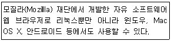
- Chrome
- Firefox
- Opera
- Safari
(정답률: 67%)
69. 다음 중 리눅스와 윈도우 시스템 간의 자료 공유를 위해 사용되는 인터넷 서비스로 가장 알맞은 것은?
- SSH
- NFS
- VNC
- SAMBA
(정답률: 57%)
70. 다음 설명과 관련 있는 명령어로 알맞은 것은?
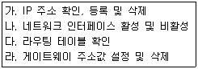
- ip
- ifconfig
- route
- ethtool
(정답률: 34%)
71. 다음 설명일 때 나타나는 netstat 명령의 상태값(State)으로 알맞은 것은?
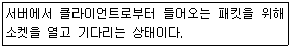
- LISTEN
- SYS-SENT
- ESTABLISHED
- SYN_RECEIVED
(정답률: 56%)
72. 다음 중 두 번째 이더넷 카드의 IP 주소 정보가 기록되는 파일로 알맞은 것은?
- /etc/networks
- /etc/sysconfig/network
- /etc/sysconfig/network-scripts/ifcfg-eth1
- /etc/sysconfig/network-scripts/ifcfg-eth2
(정답률: 52%)
73. 다음 조건일 때 생성되는 서브네트워크의 개수로 알맞은 것은?
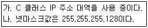
- 2
- 4
- 64
- 128
(정답률: 58%)
74. 다음 중 시스템에 설정되어 있는 DNS 서버의 IP 주소를 확인하는 명령으로 알맞은 것은?
- ifconfig –a
- cat /etc/resolv.conf
- route -v
- netstat –r
(정답률: 60%)
75. 다음 그림에 해당하는 네트워크 유틸리티를 실행하기 위한 명령으로 알맞은 것은?
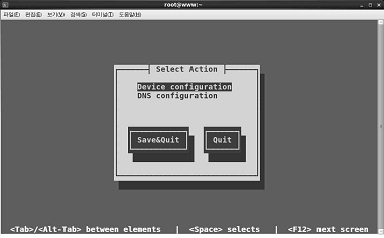
- service network start
- system-config-network
- nettool
- nm-connection-editor
(정답률: 56%)
76. 다음 중 커널에 로드되어 있는 네트워크 모듈을 확인할 때 사용하는 명령으로 알맞은 것은?
- lsmod
- rmmod
- insmod
- modprobe
(정답률: 62%)
77. 다음에서 설명하는 내용으로 알맞은 것은?
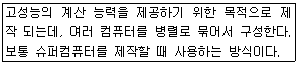
- 임베디드 시스템
- HPC
- HA Cluster
- 부하분산 클러스터
(정답률: 49%)
78. 다음 중 임베디드 리눅스에 대한 설명으로 틀린 것은?
- 별도의 로열티나 라이선스 비용이 없다.
- 사용자모드와 커널모드 메모리 접근이 간단하다.
- 소스가 공개되어 있어서 변경 및 재배포가 용이하다.
- 리눅스를 사용한지가 오래되어서, 커널이 안정적이다.
(정답률: 53%)
79. 다음 중 KVM에 대한 설명으로 틀린 것은?
- 이더넷 및 Disk I/O 반가상화를 지원한다.
- CPU 및 그래픽 카드 반가상화를 지원한다.
- QEMU을 이용한 CPU 에뮬레이터 방식이다.
- CPU 가상화 기술인 인텔의 VT 및 AMD-V 기반으로 동작한다.
(정답률: 41%)
80. 다음 설명에 해당하지 않는 가상화 프로그램으로 알맞은 것은?
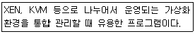
- Docker
- OpenStack
- Eucalyptus
- CloudStack
(정답률: 59%)
해당 파일에서 사용자(user)는 읽기, 쓰기, 실행 권한을 가지고 있으므로 "rwx"로 표시된다. 그룹(group)과 다른 사용자(other)는 읽기 및 실행 권한만 가지고 있으므로 "r-x"로 표시된다.
따라서, "chmod 755 aaa.txt"가 정답이다. 이는 사용자(user)에게는 읽기, 쓰기, 실행 권한을 부여하고, 그룹(group)과 다른 사용자(other)에게는 읽기 및 실행 권한만 부여하는 것을 의미한다.